01 — Ba bối cảnh
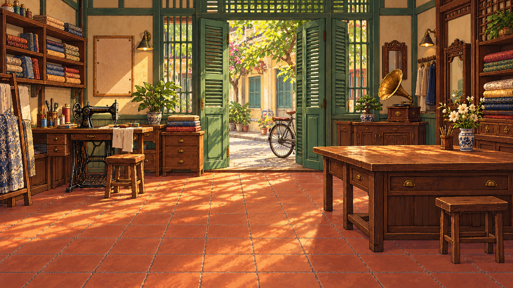
S1 · Tiệm may Đa Kao
Máy may trái, lối phố giữa, máy hát phải. Thu biên nhận bằng lớp vật phẩm riêng; không thêm puzzle tại tiệm.
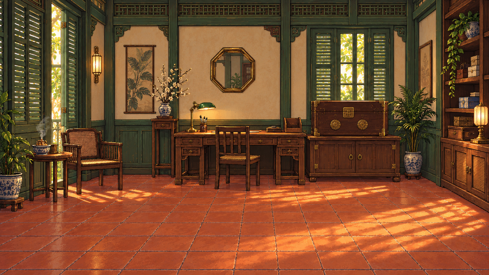
S2 · Phòng hồ sơ
Rương hai nhãn và bàn đọc. Càn / Tốn là chữ UI, không nằm trong ảnh, không phải bài kiểm tra bói toán.
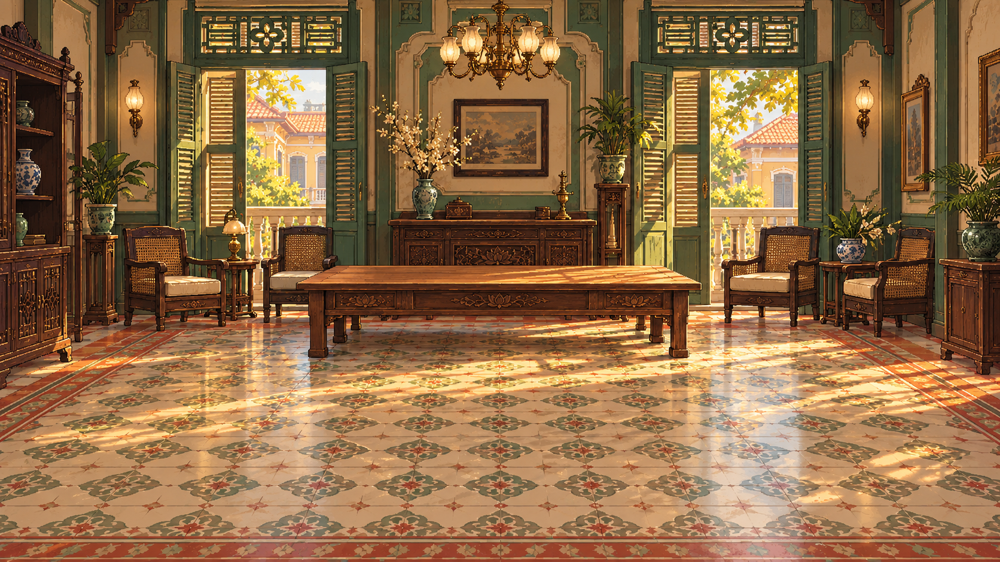
S3 · Dinh thự đối chất
Bàn giữa để đối chiếu giấy tờ; Mai giữ vị trí trung tâm, nhân chứng đứng bên cạnh.
02 — Nhân vật và biểu cảm
Nền ô vuông giúp kiểm tra alpha. Giữ thân và chân dài như bộ C2 đã chọn; không tăng đầu theo mỗi biểu cảm.
Phân biệt danh tính: An giữ tóc dài cài hoa và mắt tròn; Loan giữ tóc búi phồng của C2; Mai chuyển sang bob ngắn, mặt thon và mắt hạnh nhân; Bà Lớn dùng tóc rẽ giữa búi thấp, mặt đầy và nét tuổi. Không sửa An/Loan trong đợt này, không dùng màu áo làm dấu hiệu nhận diện duy nhất.
Mai · Diện mạo mới
Tóc bob ngắn uốn ôm gáy, rẽ lệch; mặt thon, mắt hạnh nhân, nụ cười lanh lợi. Giữ áo xanh ngọc, thước dây và phấn may. Bản cũ.
Tham chiếu C2 · Loan
Chỉ tham chiếu ngôn ngữ tạo hình, không tái dùng danh tính Loan cho Mai.
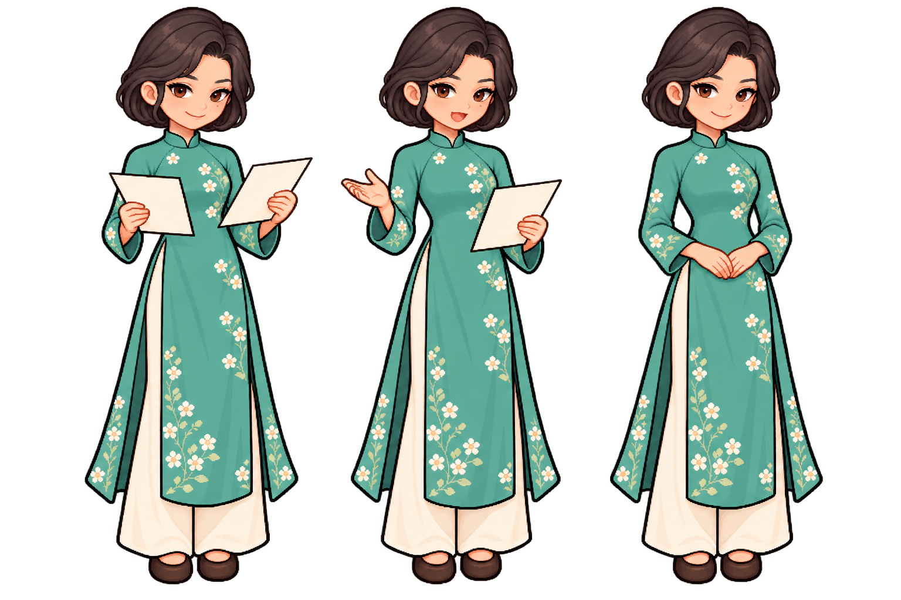
Mai · Điều tra → Lên tiếng → Nhẹ nhõm
Cùng tóc bob và gương mặt mới; bỏ thước dây khi rời tiệm. Bản cũ.
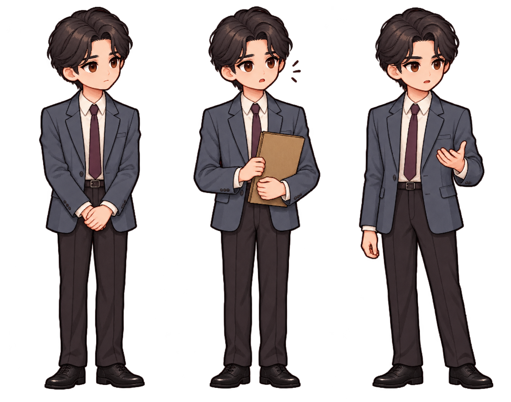
Vinh · Lắng nghe → Nhận ra → Làm chứng
Trang phục đô thị theo hồ sơ nhân vật; không tạo hình người hùng giải cứu.
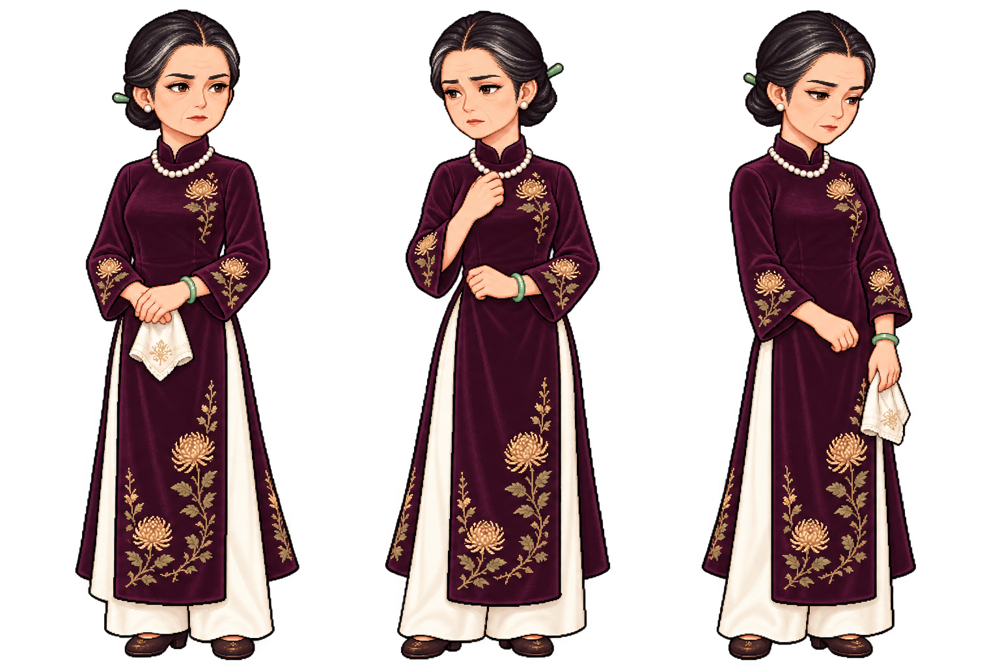
Bà Lớn · Diện mạo mới
Tóc rẽ giữa búi thấp, sợi bạc hai bên; mặt đầy, hàm rõ, mắt hẹp và nét tuổi. Nghiêm nghị → Dao động → Nhìn nhận. Bản cũ.
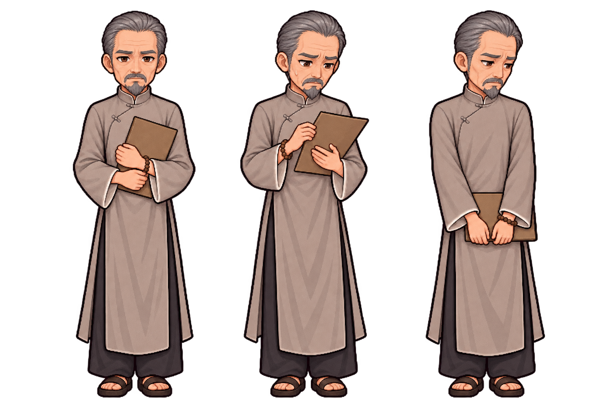
Thầy Ba Càn · Bản 2
Đã chỉnh nét nam lớn tuổi: tóc bạc chải gọn, trán cao, hàm rõ, mắt hẹp và râu bạc. Bình tĩnh → Lo lắng → Tránh ánh mắt. Xem bản cũ.
03 — Trang phục và phụ kiện
Thứ tự ba góc: trước · nghiêng trái · sau. Đây là nguồn, chưa căn về strip An. Áo cần ép bốn key xám và fitting; kính giữ màu theo renderer hiện tại. Guốc mộc tái dùng bộ đã làm C2.
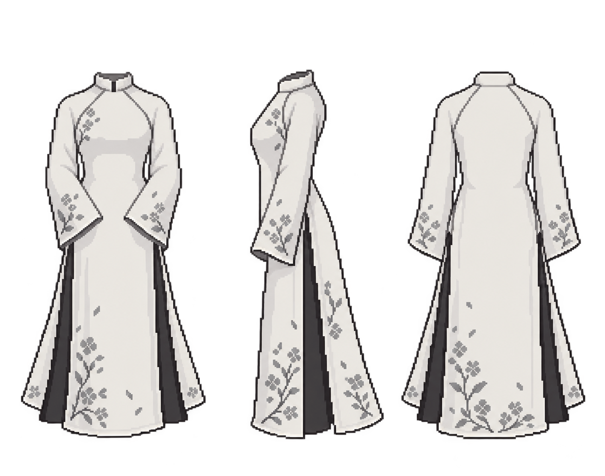
Áo raglan
Đường ráp cổ tới nách, không gắn góc số cố định hoặc Bát Quái.
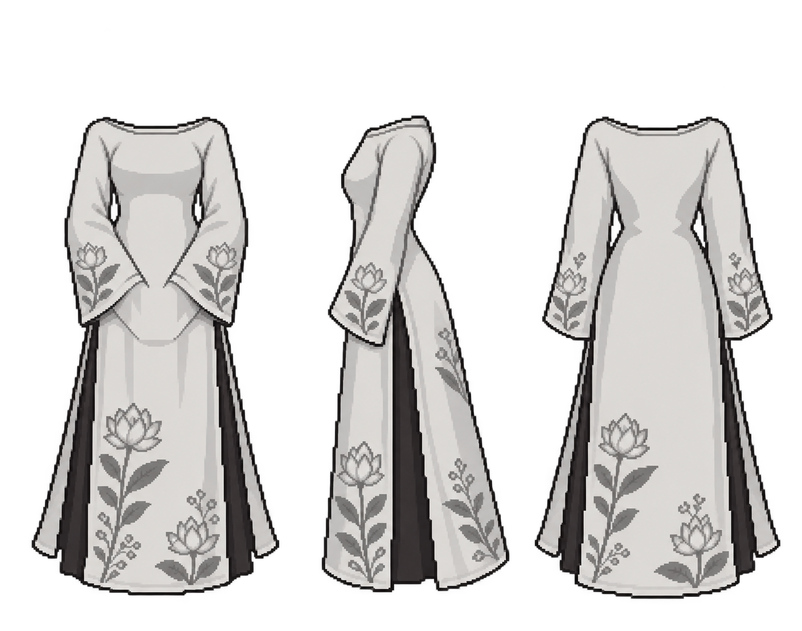
Áo cổ thuyền
Cổ ngang rộng nông, khác rõ áo cổ đứng; chuẩn bị cho phần thưởng phụ.
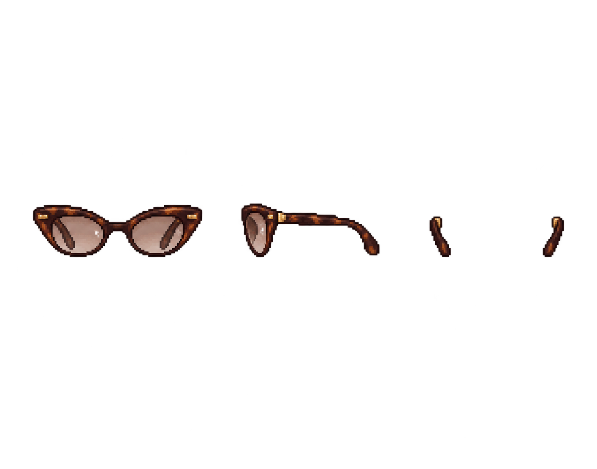
Kính mắt mèo
Gọng nâu hổ phách. Góc sau chỉ có càng kính; không có tròng sau đầu.
04 — Chứng cứ và trạng thái
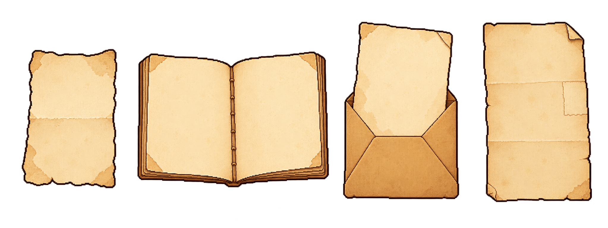
Giấy chứng cứ trống
UI dựng nội dung và điểm khác biệt có nghĩa. Không dùng nếp gấp hoặc màu giấy làm bằng chứng thay cho nội dung.
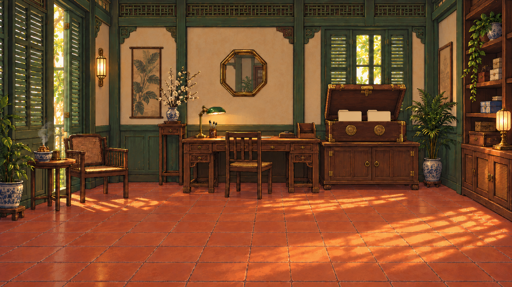
Rương mở · Có hồ sơ
Ảnh nguồn chỉnh sửa. Phải crop ROI và căn lớp phủ; không thay nguyên phòng.
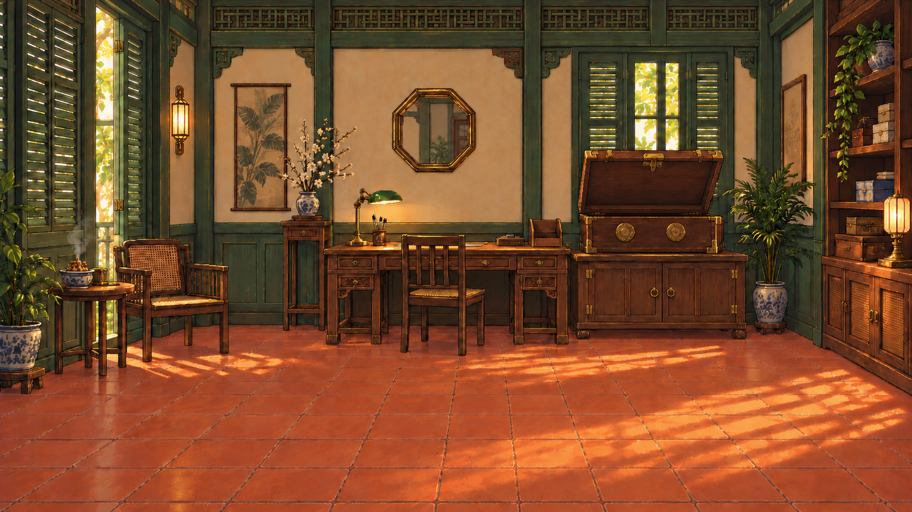
Rương mở · Trống
Cần kiểm tra nắp, thân và góc rương trùng trạng thái mở trước khi xuất.